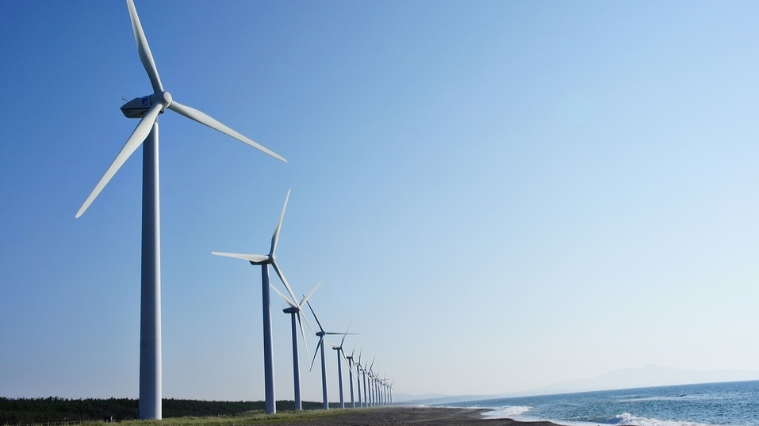
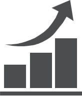

나만의 커리어 철학
-
연봉 ❯
-
친환경 ❯
 -
함께 성장하는 회사 ❯

-
마음을 나눌 수 있는 동료 ❯
연봉
직장을 구하고 일을 하는 이유에는 여러 가지가 있지만, 저는 돈이 가장 큰 비중을 차지합니다.
친환경 ☘
기업이 나서서 친환경 제품을 생산하고 사용하는 것은 중요하다고 생각합니다.
어떤 기업이 친환경 제품을 생산하면 최소한 그 제품을 사용하는 사람들은 모두 환경을 지키는 데 일조할 수 있기 때문입니다.
그래서 저는 환경을 생각하는 기업에서 일하고 싶습니다.
성장 
정체되어 있지 않고 어제보다 더 나은 기업이 되기 위해 노력하는
곳에서 함께 성장해 나가고 싶습니다.
또한, 회계 업무에만 얽매이기보다 사내기업가 정신을 가지고
기업의 발전을 위해 일하며 폭넓고 다양한 경험을 쌓아가고 싶습니다.
동료
직장에서 마음을 나눌 수 있는 동료를 찾는 것은 꿈같은 이야기처럼 느껴지기도 합니다.
하지만 직급과 상관없이 앞으로 나아가야 할 방향을 함께 이야기 할 수 있는 동료가 있다면
서로에게서 지치고 힘든 상황을 버텨낼 힘을 얻을 수 있다고 생각합니다.